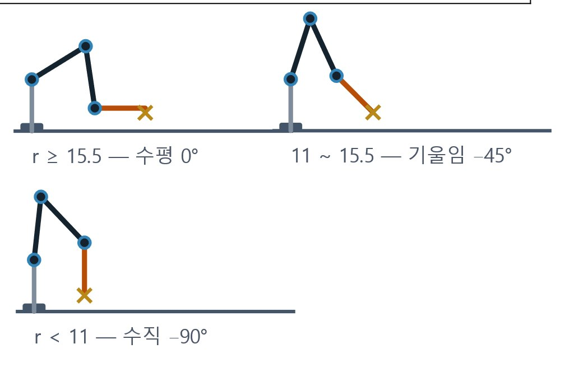
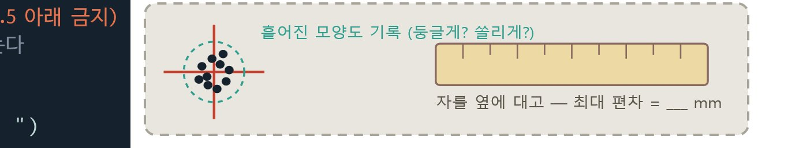
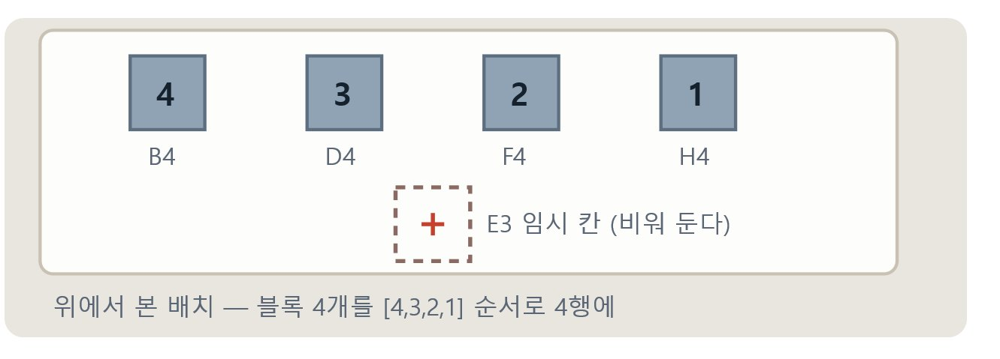
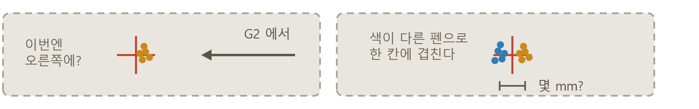

주제 5 · 16~18차시
작업 지도 위에서 일하기
세계를 고정하고, 재고, 반복정밀도를 잰다
실제 구분 차시보다 많은 시간이 소요될 수 있음.
정렬 없이 보내보기 실습 1 · 정렬 없이 먼저
from roboid import * raccoon = Raccoon() raccoon.move_to(-8, 12, 10) # C2 칸에 적힌 좌표 wait(1000) raccoon.move_to(-8, 12, 3, 30) # 천천히, 3cm 까지만
작업 지도를 일부러 정렬하지 말고 로봇 앞에 대충 펴 놓는다.
그리고 C2 칸에 인쇄된 좌표 (−8, 12) 를 그대로 보내보자.
z 는 3cm 에서 멈춘다 — 책상에 닿기 전에 눈으로 비교한다
오류가 생기는 원인은 로봇 잘못일까, 종이 잘못일까?
[기록해두기]
집게 끝이 C2 십자 위에 왔는지? 벗어났다면 몇 mm, 어느 쪽인지 자로 재서 적기.
옆 사람과 비교 — 벗어난 방향이 제각각일 것이다.
로봇과 종이, 누가 틀렸을까? 생각해보기
로봇은 자기 원점(회전축이 책상과 만나는 점) 기준으로 (−8, 12) 에 정확히 갔다.
어긋난 이유 — 종이가 로봇의 좌표계와 안 맞게 놓여서.
원점이 1cm 밀리면 36칸이 통째로 1cm 밀린다.
벗어난 방향이 사람마다 달랐던 이유 — 작업 지도를 놓은 방식이 달랐으니까.
그러니 오늘 일의 절반은 코드가 아니라 종이와 로봇을 맞추는 일, 정렬이다.
— 왜 로봇이 보게 하지 않고, 종이에 좌표를 인쇄해 쓰는 걸까?
보게 할까, 고정할까? 지난 시간 1cm 실험 — 로봇은 블록이 어디 있는지 몰랐다
첫째, 로봇이 보게 한다. 카메라로 블록 위치를 재서 명령 좌표를 고치는 방식.
흔히 상상하는 로봇의 모습이지만 — 카메라·로봇 좌표계를 잇는 보정이 필요하고, 보정해도 잔차가 남는다.
둘째, 세계를 고정해 알려준다. 물건이 놓일 자리를 미리 정하고 그 좌표를 가르친다.
보정이 필요 없는 대신 — 물건을 정해진 자리에 놓아야 한다는 조건이 붙는다.
오늘 하는 것이 이쪽이다.
그러면 산업 현장의 로봇은 두 방법 중 어느 쪽일까?
대부분의 자동차 공장 용접 로봇은 카메라가 없다
차체와 작업 공간이 정확히 고정되어 있기 때문에 로봇은 가르쳐 준 좌표로 가서 정해진 동작만 수행한다.
따라서 카메라가 불필요하다. 카메라(비전인식)는 주로 위치를 고정하기 어려울 때 쓴다.
오늘 답해야 할 네 가지 핵심 질문
Q1
블록만 1cm 옮기자 같은 코드가 허공을 집었다. 로봇은 블록이 아니라 좌표를 따라갔다. 이 문제의 해결책 두 가지는 각각 무엇이고, 우리는 왜 지도를 택했는가?
Q2
칸 이름은 어떻게 좌표로 바꿀 수 있을까?
Q3
로봇이 (−8, 12)에 갔다고 보고할 때, 정말 거기에 있는가?
Q4
접근 방향을 바꾸면 왜 착지점이 달라지는가?
작업 지도 읽어보기
C2
(−8, 12) r14.4 −45°
한 칸에 적힌 네 가지 — 칸 이름 · 좌표 (x, y) · 반경 r · 집게 기울기.
가운데 십자 = 로봇이 실제로 가는 점. 점선 사각형 = 블록을 놓는 자리.
점선이 왜 필요한가.
칸 40mm, 블록 30mm — 그냥 놓으면 블록이 ±5mm 떠다닌다. 전체 오차에서 가장 큰 항목이었다.
점선에 맞춰 놓으면 ±1mm. 로봇이 아무리 정확해도, 블록을 점선에 안 맞추면 못 집는다.
| 용지 | 격자 | 좌표 범위 | 그 밖에 인쇄된 것 |
|---|---|---|---|
| A3 가로 | 9×4 = 36칸 | x −16~16 / y 8~20 | 원점 십자 · 베이스 정렬 자리 · 도달 한계 호 · 10cm 검증 자 |
| B4 가로 | 7×3 = 21칸 | x −12~12 / y 8~16 |
정렬과 배율
세 가지를 순서대로.
첫째, 배율 검증. 인쇄된 10cm 자를 실제 자로 잰다 — 10.0cm 가 아니면 “페이지에 맞춤” 을 끄고 100%로 다시 인쇄.
프린터마다 배율이 다르고, 축소 인쇄가 기본값인 경우가 많다.
둘째, 원점 맞추기. 베이스 회전축을 원점 십자에 — 흔한 실수가 앞면을 맞추는 것. 회전축은 베이스 중심에 있다. 베이스 자리 사각형에 얹으면 자동으로 맞는다.
셋째, 고정. 작업 지도 네 귀퉁이를 테이프로, 로봇도 움직이지 않게 — 수업 중 1cm 밀리면 모든 칸이 1cm 틀어진다.

검증: E2 칸(0, 12)에 블록을 놓고 로봇을 그 좌표로 보낸다. 집게가 블록 바로 위에 오는가? 이 검증을 통과하지 못하면 오늘 나머지 활동이 전부 실패한다.
칸 이름을 좌표로 구현 · 작성&실행 05_작업지도_틀.py
칸 이름을 좌표로 변환하기 위해서는 두 가지 방법이 있다 — 정답은 없지만 선택한 근거가 중요하다
딕셔너리 — 읽기 쉽고 예외 칸을 끼우기 쉽다. 대신 36줄을 손으로.
계산 — 짧고 격자 확장이 쉽다. 대신 예외 칸이 어렵다.
설정되지 않은 칸 위치(Z9) 가 들어오면?
잘못된 칸 이름에 조용히 이상한 좌표를 돌려주면, 프로젝트(주제 11)에서 로봇이 엉뚱한 곳으로 간다.
05_작업지도_틀.py 에서 USE 를 고르고 TODO 1~3 을 채운다. 블록 하나를 C2 에 놓고 G1 은 비운다.
cell_to_xy("C2") -> (-8, 12)방법 A · 딕셔너리
방법 B · 계산
CELLS = {"A1": (-16, 8),
"A2": (-16, 12), ... }x = X0 + (ord(c) - 65) * 4 # 글자 → 열 번호 y = Y0 + (int(r) - 1) * 4 # 숫자 → 행 번호
주제 4에서 만든 집기 함수를 그대로 재사용한다 · 기울기는 arm_helper.tilt_for(r)
왜 칸마다 기울기가 다를까?
| 반경 r | 기울기 | 팔의 자세 |
|---|---|---|
| 15.5 cm 이상 | 수평 0° | 팔을 뻗은 상태로 위에서 내려간다 |
| 11 ~ 15.5 cm | 기울임 −45° | 수평으로는 관절 한계에 걸린다 |
| 11 cm 미만 | 수직 −90° | 팔을 접은 상태로 똑바로 내려간다 |
작업 지도의 칸 색상이 세 종류로 나뉜다.
관절 한계로 인해 가까운 칸일수록 수직으로 내려가야 한다.
E1(반경 8cm)에 수평 집게로 가려 하면 can_move_to 가 False 를 돌려준다.
[확인해보기]
작업 지도에 인쇄된 기울기와 tilt_for(r) 값을 비교해보자.

다음 차시에 잴 세 가지 예상해보기 예상 적기 · 다음 차시에 펜으로 판정한다
| 질문 | 내 예상 |
|---|---|
| ① 같은 명령을 10번 주면 매번 정확히 같은 점에 찍힐까? 흩어진다면 몇 mm 쯤? | |
| ② 같은 칸이라도 왼쪽에서 접근할 때와 오른쪽에서 접근할 때 착지점이 같을까? | |
| ③ 먼 칸(A4)과 가까운 칸(E1) 중 어느 쪽이 더 흔들릴까? |
다음 차시에 집게에 펜을 물려 점을 찍어서 판정한다.
로봇은 소수점까지 또렷하게 좌표를 처리하지만 그 말을 어디까지 믿어도 되는가?
로봇이 C2에 갔다고 말한다. 정말 거기 있을까? 18차시
지난 시간 끝에 세 가지를 예상해 적었다.
오늘은 그 예상을 펜과 자로 재서 맞춰 본다.
10회 산포 · 접근 방향 · 먼 칸과 가까운 칸
안전 규칙 복창
battery_state()
반복정밀도 지도
펜 · 자 준비
반복정밀도 측정 핵심 활동 · ch5_12p.py
홈 → C2 로 가서 펜으로 점 → 홈. 이것을 열 번 반복한다.
매번 같은 점에 찍힐까?
from roboid import *
raccoon = Raccoon()
x, y = -8, 12 # C2 칸 — A4 는 (-16, 20), E3 은 (0, 16)
z_펜 = 4.0 # ← 집게 아래로 펜이 3.5cm 나왔을 때 (1.5 아래 금지)
# 펜 물리기 — 팔을 세워 두고, 눕힌 집게 턱 사이에 펜을 세워 감는다
raccoon.degree_to(0, -10, -70, -10, 20)
raccoon.open_gripper()
input("감았으면 (이미 물렸으면 그대로) Enter > ")
raccoon.close_gripper()
for i in range(10):
raccoon.degree_to(0, -10, -70, -10) # 팔을 세운 뒤
raccoon.move_to(x, y, 10) # 위에서 접근
raccoon.move_to(x, y, z_펜, 20) # 콕!
raccoon.beep()
raccoon.move_to(x, y, 10) # 다시 들어 올리고
raccoon.degree_to(0, -10, -140, 60)# 홈에서 다시 출발
raccoon.dispose()
[기록해두기] 반복정밀도 지도(A3) 왼쪽 ① — 열 점의 평균 위치 · 최대 편차(mm) · 흩어진 모양을 지도에 적는다
먼 칸(A4, r=25.6)과 가까운 칸(E3, r=16.0)을 각각 재서 비교해보자. 어느 쪽이 더 흩어질까?
눈금자의 Z_DRAW 는 쓰지 않는다 — z_펜 = 4.0 을 쓴다. 펜은 집게 아래로 3.5cm 나오게 물린다 (집게를 눕혀 쓴다). 안 찍히면 0.1 씩 내린다.
같은 칸, 다른 방향에서 접근하면? 핵심 질문 Q4 · ch5_13p.py
C2 에 점을 찍는 것은 같다. 다만 출발점을 바꾼다 — 왼쪽 A2 에서 5번, 오른쪽 G2 에서 5번.
두 무리의 평균 위치가 다를까? 다르면 몇 mm?
로봇을 지도 오른쪽 자리로 옮겨 ④ 에 찍는다 — A2 출발 다섯 점에 동그라미를 친 뒤 G2 로 바꾼다.
출발칸 = "A2" # ← "G2" 로 바꿔 다섯 번 더 — lessons/ch5_13p.py


차이가 나타난다면 — 백래시가 유력하다. 기어의 맞물림 틈 때문에, 방향을 바꾸면 그 틈만큼 먼저 헛돈다.
그래서 현장은 정밀 작업에서 항상 같은 방향에서 접근한다 — 단방향 접근.
[해보기] 목표 칸에 항상 왼쪽에서 접근하게 고치고, 반복정밀도를 다시 재서 개선됐는지 확인.
확신한다 ≠ 맞다 18차시 · 왜 안 될까
raccoon.xyz() → (-8.0, 12.0, 3.0)
로봇은 자기 위치를 소수점까지 또렷하게 말한다. 그런데 방금 우리가 찍은 10개의 점은 흩어져 있다.
그 이유는 로봇이 이동한 거리와 각도를 센서로 잰 것이 아니라서,
로봇은 자기가 실제로 어디 있는지 모르기 때문이다.
시스템이 자기 오차를 인지하지 못한다면 사람이 한계를 정해줘야 한다.
그래서 블록은 3cm이지만 작업 지도의 칸은 4cm로 넉넉하게 되어 있다.
핵심 질문 — 이제 답할 수 있다
보게 하거나, 세계를 고정하거나 — 산업 현장은 대부분 후자
딕셔너리는 읽기 쉽고, 계산은 확장이 쉽다
로봇은 계산한 값을 말할 뿐, 실제 위치를 모른다
기어 틈(백래시) 때문에 방향이 바뀌면 착지점이 달라진다
오늘의 제출물
05_작업지도_틀.py(칸↔좌표) · 반복정밀도 측정표(산포 + 백래시)
좋은 기록의 기준
실패를 재현 조건과 함께 기록하고, 가설을 세워 검증한 뒤 개선했는가
예: 단방향 접근으로 바꿔 재측정
더 해 보기 · 자율 탐구
지도는 어디인지는 알려 준다.
그런데 무엇인지는 모른다 — 빨강과 파랑을 구분하지 못한다